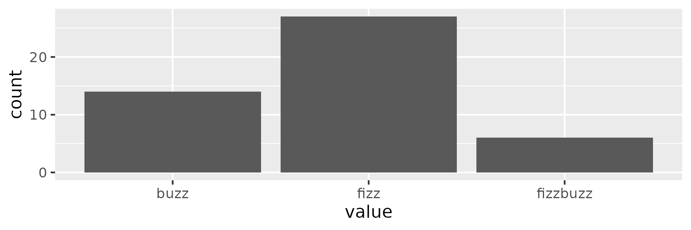

5 Scrubbing Data
Two chapters ago, in the first step of the OSEMN model for data science, we looked at obtaining data from a variety of sources. This chapter is all about the second step: scrubbing data. You see, it’s quite rare that you can immediately continue with exploring or even modeling the data. There’s a plethora of reasons why your data first needs some cleaning, or scrubbing.
For starters, the data might not be in the desired format. For example, you may have obtained some JSON data from an API, but you need it to be in CSV format to create a visualization. Other common formats include plain text, HTML, and XML. Most command-line tools only work with one or two formats, so it’s important that you’re able to convert data from one format to another.
Once the data is in the desired format, there could still be issues like missing values, inconsistencies, weird characters, or unnecessary parts. You can fix these by applying filters, replacing values, and combining multiple files. The command line is especially well-suited for these kind of transformations, because there are many specialized tools available, most of which can handle large amounts of data. In this chapter I’ll discuss classic tools such as grep1 and awk2, and newer tools such as jq3 and pup4.
Sometimes you can use the same command-line tool to perform several operations or multiple tools to perform the same operation. This chapter is more structured like a cookbook, where the focus is on the problems or recipes, rather than diving deeply into the command-line tools themselves.
5.1 Overview
In this chapter, you’ll learn how to:
- Convert data from one format to another
- Apply SQL queries directly to CSV
- Filter lines
- Extract and replace values
- Split, merge, and extract columns
- Combine multiple files
This chapter starts with the following files:
cd /data/ch05
l
total 200K
-rw-r--r-- 1 dst dst 164K Nov 8 20:44 alice.txt
-rw-r--r-- 1 dst dst 4.5K Nov 8 20:44 iris.csv
-rw-r--r-- 1 dst dst 179 Nov 8 20:44 irismeta.csv
-rw-r--r-- 1 dst dst 160 Nov 8 20:44 names-comma.csv
-rw-r--r-- 1 dst dst 129 Nov 8 20:44 names.csv
-rw-r--r-- 1 dst dst 7.8K Nov 8 20:44 tips.csv
-rw-r--r-- 1 dst dst 5.1K Nov 8 20:44 users.jsonThe instructions to get these files are in Chapter 2. Any other files are either downloaded or generated using command-line tools.
Before I dive into the actual transformations, I’d like to demonstrate their ubiquity when working at the command line.
5.2 Transformations, Transformations Everywhere
In Chapter 1 I mentioned that, in practice, the steps of the OSEMN model will rarely be followed linearly. In this vein, although scrubbing is the second step of the OSEMN model, I want you to know that it’s not just the obtained data that needs scrubbing. The transformations that you’ll learn in this chapter can be useful at any part of your pipeline and at any step of the OSEMN model. Generally, if one command line tool generates output that can be used immediately by the next tool, you can chain the two tools together by using the pipe operator (|). Otherwise, a transformation needs to be applied to the data first by inserting an intermediate tool into the pipeline.
Let me walk you through an example to make this more concrete. Imagine that you have obtained the first 100 items of a fizzbuzz sequence (cf. Chapter 4) and that you’d like to visualize how often the words fizz, buzz, and fizzbuzz appear using a bar chart. Don’t worry if this example uses tools that you might not be familiar with yet, they’ll all be covered in more detail later.
First you obtain the data by generating the sequence and write it to fb.seq:
seq 100 |
/data/ch04/fizzbuzz.py | ➊
tee fb.seq | trim
1
2
fizz
4
buzz
fizz
7
8
fizz
buzz
… with 90 more lines- The custom tool
fizzbuzz.pycomes from Chapter 4.
Then you use grep to keep the lines that match the pattern fizz or buzz and count how often each word appears using sort and uniq5:
grep -E "fizz|buzz" fb.seq | ➊
sort | uniq -c | sort -nr > fb.cnt ➋
bat -A fb.cnt
───────┬────────────────────────────────────────────────────────────────────────
│ File: fb.cnt
───────┼────────────────────────────────────────────────────────────────────────
1 │ ·····27·fizz␊
2 │ ·····14·buzz␊
3 │ ······6·fizzbuzz␊
───────┴────────────────────────────────────────────────────────────────────────- This regular expression also matches fizzbuzz.
- Using
sortanduniqthis way is a common way to count lines and sort them in descending order. It’s the-coption that adds the counts.
Note that sort is used twice: first because uniq assumes its input data to be sorted and second to sort the counts numerically. In a way, this is an intermediate transformation, albeit a subtle one.
The next step would be to visualize the counts using rush6. However, since rush expects the input data to be in CSV format, this requires a less subtle transformation first. awk can add a header, flip the two fields, and insert commas in a single incantation:
< fb.cnt awk 'BEGIN { print "value,count" } { print $2","$1 }' > fb.csv
bat fb.csv
───────┬────────────────────────────────────────────────────────────────────────
│ File: fb.csv
───────┼────────────────────────────────────────────────────────────────────────
1 │ value,count
2 │ fizz,27
3 │ buzz,14
4 │ fizzbuzz,6
───────┴────────────────────────────────────────────────────────────────────────
csvlook fb.csv
│ value │ count │
├──────────┼───────┤
│ fizz │ 27 │
│ buzz │ 14 │
│ fizzbuzz │ 6 │Now you’re ready to use rush to create a bar chart. See Figure 5.1 for the result. (I’ll cover this syntax of rush in detail in Chapter 7.)
rush plot -x value -y count --geom col --height 2 fb.csv > fb.png
display fb.png
Although this example is a bit contrived, it reveals a pattern that is common when working at the command line. The key tools, such as the ones that obtain data, create a visualization, or train a model, often require intermediate transformations in order to be chained into a pipeline. In that sense, writing a pipeline is like solving a puzzle, where the key pieces often require helper pieces to fit.
Now that you’ve seen the importance of scrubbing data, you’re ready to learn about some actual transformations.
5.3 Plain Text
Formally speaking, plain text refers to a sequence of human-readable characters and optionally, some specific types of control characters such as tabs and newlines7. Examples are logs, e-books, emails, and source code. Plain text has many benefits over binary data8, including:
- It can be opened, edited, and saved using any text editor
- It’s self-describing and independent of the application that created it
- It will outlive other forms of data, because no additional knowledge or applications are required to process it
But most importantly, the Unix philosophy considers plain text to be the universal interface between command-line tools9. Meaning, most tools accept plain text as input and produce plain text as output.
That’s reason enough for me to start with plain text. The other formats that I discuss in this chapter, CSV, JSON, XML, and HTML are indeed also plain text. For now, I assume that the plain text has no clear tabular structure (like CSV does) or nested structure (like JSON, XML, and HTML do). Later in this chapter, I’ll introduce some tools that are specifically designed for working with these formats.
5.3.1 Filtering Lines
The first scrubbing operation is filtering lines. This means that from the input data, each line will be evaluated whether it will be kept or discarded.
5.3.1.1 Based on Location
The most straightforward way to filter lines is based on their location. This may be useful when you want to inspect, say, the top 10 lines of a file, or when you extract a specific row from the output of another command-line tool. To illustrate how to filter based on location, let’s create a dummy file that contains 10 lines:
seq -f "Line %g" 10 | tee lines
Line 1
Line 2
Line 3
Line 4
Line 5
Line 6
Line 7
Line 8
Line 9
Line 10You can print the first 3 lines using either head10, sed11, or awk:
< lines head -n 3
Line 1
Line 2
Line 3
< lines sed -n '1,3p'
Line 1
Line 2
Line 3
< lines awk 'NR <= 3' ➊
Line 1
Line 2
Line 3- In
awk, NR refers to the total number of input records seen so far.
Similarly, you can print the last 3 lines using tail12:
< lines tail -n 3
Line 8
Line 9
Line 10You can also you use sed and awk for this, but tail is much faster. Removing the first 3 lines goes as follows:
< lines tail -n +4
Line 4
Line 5
Line 6
Line 7
Line 8
Line 9
Line 10
< lines sed '1,3d'
Line 4
Line 5
Line 6
Line 7
Line 8
Line 9
Line 10
< lines sed -n '1,3!p'
Line 4
Line 5
Line 6
Line 7
Line 8
Line 9
Line 10Notice that with tail you have to specify the number of lines plus one. Think of it as the line from which you want to start printing. Removing the last 3 lines can be done with head:
< lines head -n -3
Line 1
Line 2
Line 3
Line 4
Line 5
Line 6
Line 7You can print specific lines using a either sed, awk, or a combination of head and tail. Here I print lines 4, 5, and 6:
< lines sed -n '4,6p'
Line 4
Line 5
Line 6
< lines awk '(NR>=4) && (NR<=6)'
Line 4
Line 5
Line 6
< lines head -n 6 | tail -n 3
Line 4
Line 5
Line 6You can print odd lines with sed by specifying a start and a step, or with awk by using the modulo operator:
< lines sed -n '1~2p'
Line 1
Line 3
Line 5
Line 7
Line 9
< lines awk 'NR%2'
Line 1
Line 3
Line 5
Line 7
Line 9Printing even lines works in a similar manner:
< lines sed -n '0~2p'
Line 2
Line 4
Line 6
Line 8
Line 10
< lines awk '(NR+1)%2'
Line 2
Line 4
Line 6
Line 8
Line 10Many of these examples start with the smaller-than sign (<) followed by the filename. I do this because this allows me to read the pipeline from left to right. Please know that this is my own preference. You can also use cat to pipe the contents of a file. Also, many command-line tools also accept the filename as an argument.
5.3.1.2 Based on a Pattern
Sometimes you want to keep or discard lines based on their contents. With grep, the canonical command-line tool for filtering lines, you can print every line that matches a certain pattern or regular expression. For example, to extract all the chapter headings from Alice’s Adventures in Wonderland:
< alice.txt grep -i chapter ➊
CHAPTER I. Down the Rabbit-Hole
CHAPTER II. The Pool of Tears
CHAPTER III. A Caucus-Race and a Long Tale
CHAPTER IV. The Rabbit Sends in a Little Bill
CHAPTER V. Advice from a Caterpillar
CHAPTER VI. Pig and Pepper
CHAPTER VII. A Mad Tea-Party
CHAPTER VIII. The Queen's Croquet-Ground
CHAPTER IX. The Mock Turtle's Story
CHAPTER X. The Lobster Quadrille
CHAPTER XI. Who Stole the Tarts?
CHAPTER XII. Alice's Evidence- The
-ioptions specifies that the matching should be case-insensitive.
You can also specify a regular expression. For example, if you only wanted to print the headings that start with The:
< alice.txt grep -E '^CHAPTER (.*)\. The'
CHAPTER II. The Pool of Tears
CHAPTER IV. The Rabbit Sends in a Little Bill
CHAPTER VIII. The Queen's Croquet-Ground
CHAPTER IX. The Mock Turtle's Story
CHAPTER X. The Lobster QuadrilleNote that you have to specify the -E option in order to enable regular expressions. Otherwise, grep interprets the pattern as a literal string which most likely results in no matches at all:
< alice.txt grep '^CHAPTER (.*)\. The'With the -v option you invert the matches, so that grep prints the lines which don’t match the pattern. The regular expression below matches lines that contain white space, only. So with the inverse, and using wc -l, you can count the number of non-empty lines:
< alice.txt grep -Ev '^\s$' | wc -l
27905.3.1.3 Based on Randomness
When you’re in the process of formulating your data pipeline and you have a lot of data, then debugging your pipeline can be cumbersome. In that case, generating a smaller sample from the data might be useful. This is where sample13 comes in handy. The main purpose of sample is to get a subset of the data by outputting only a certain percentage of the input on a line-by-line basis.
seq -f "Line %g" 1000 | sample -r 1%
Line 38
Line 391
Line 474
Line 705
Line 752
Line 908Here, every input line has a one percent chance of being printed. This percentage can also be specified as a fraction (namely 1/100) or as a probability (namely 0.01).
sample has two other purposes, which can be useful when you’re debugging your pipeline. First, it’s possible to add some delay to the output. This comes in handy when the input is a constant stream (for example, the Wikipedia stream we saw in Chapter 3), and the data comes in too fast to see what’s going on. Secondly, you can put a timer on sample, so that you don’t have to kill the ongoing process manually. For example, to add a 1 second delay between each line being printed and to only run for 5 seconds, you would type:
seq -f "Line %g" 1000 | sample -r 1% -d 1000 -s 5 | ts ➊
Nov 08 20:44:32 Line 73
Nov 08 20:44:33 Line 109
Nov 08 20:44:34 Line 142
Nov 08 20:44:35 Line 154
Nov 08 20:44:36 Line 356
Nov 08 20:44:37 Line 544- The tool
ts14 adds a timestamp in front of each line.
In order to prevent unnecessary computation, try to put sample as early as possible in your pipeline. In fact, this argument holds for any command-line tool that reduces data, like head and tail. Once you’re confident your pipeline works, you take it out of the pipeline.
5.3.2 Extracting Values
To extract the actual chapter headings from our example earlier, you can take a simple approach by piping the output of grep to cut:
grep -i chapter alice.txt | cut -d ' ' -f 3-
Down the Rabbit-Hole
The Pool of Tears
A Caucus-Race and a Long Tale
The Rabbit Sends in a Little Bill
Advice from a Caterpillar
Pig and Pepper
A Mad Tea-Party
The Queen's Croquet-Ground
The Mock Turtle's Story
The Lobster Quadrille
Who Stole the Tarts?
Alice's EvidenceHere, each line that’s passed to cut is being split on spaces into fields, and then the third field to the last field is being printed. The total number of fields can be different per input line. With sed you can accomplish the same task in a much more complex manner:
sed -rn 's/^CHAPTER ([IVXLCDM]{1,})\. (.*)$/\2/p' alice.txt | trim 3
Down the Rabbit-Hole
The Pool of Tears
A Caucus-Race and a Long Tale
… with 9 more lines(Since the output is the same it’s trimmed to three lines.) This approach uses a regular expression and a back reference. Here, sed also takes over the work done by grep. I only recommend using such a complicated approach when a simpler one would not work. For example, if chapter was ever part of the text itself and not just used to indicate the start of a new chapter. Of course there are many levels of complexity which would have worked around this, but this is to illustrate an extremely strict approach. In practice, the challenge is to come up with a pipeline that strikes a good balance between complexity and flexibility.
It’s worth noting that cut can also split on characters positions. This is useful for when you want to extract (or remove) the same set of characters per input line:
grep -i chapter alice.txt | cut -c 9-
I. Down the Rabbit-Hole
II. The Pool of Tears
III. A Caucus-Race and a Long Tale
IV. The Rabbit Sends in a Little Bill
V. Advice from a Caterpillar
VI. Pig and Pepper
VII. A Mad Tea-Party
VIII. The Queen's Croquet-Ground
IX. The Mock Turtle's Story
X. The Lobster Quadrille
XI. Who Stole the Tarts?
XII. Alice's Evidencegrep has a great feature that outputs every match onto a separate line using the -o option:
< alice.txt grep -oE '\w{2,}' | trim
Project
Gutenberg
Alice
Adventures
in
Wonderland
by
Lewis
Carroll
This
… with 28615 more linesBut what if you wanted to create a dataset of all the words that start with an a and end with an e? Well, of course there’s a pipeline for that too:
< alice.txt tr '[:upper:]' '[:lower:]' | ➊
grep -oE '\w{2,}' |
grep -E '^a.*e$' |
sort | uniq | sort -nr | trim
available
ate
assistance
askance
arise
argue
are
archive
applicable
apple
… with 25 more lines- Here I use
trto make the text lowercase. We’ll have a closer look attrin the next section.
The two grep commands might have been combined into one, but in this case I decided it would be easier to reuse and adapt the previous pipeline. There’s no shame in being pragmatic in order to get the job done!
5.3.3 Replacing and Deleting Values
You can use the command-line tool tr15, which stands for translate, to replace or delete individual characters. For example, spaces can be replaced by underscores as follows:
echo 'hello world!' | tr ' ' '_'
hello_world!If more than one character needs to be replaced, then you can combine that:
echo 'hello world!' | tr ' !' '_?'
hello_world?tr can also be used to delete individual characters by specifying the argument -d:
echo 'hello world!' | tr -d ' !'
helloworld
echo 'hello world!' | tr -d -c '[a-z]'
helloworld%In this case, these two commands accomplish the same thing. The second command, however, uses two additional features: It specifies a range of characters (all lowercase letters) using the square brackets and the dash ([-]), and the -c option indicates that complement of that should be used. In other words, this command only keeps lowercase letters. You can even use tr to convert text to uppercase:
echo 'hello world!' | tr '[a-z]' '[A-Z]'
HELLO WORLD!
echo 'hello world!' | tr '[:lower:]' '[:upper:]'
HELLO WORLD!However, if you need to translate non-ASCII characters, then tr may not work because it operates on single-byte characters only. In those cases you should use sed instead:
echo 'hello world!' | tr '[a-z]' '[A-Z]'
HELLO WORLD!
echo 'hallo wêreld!' | tr '[a-z]' '[A-Z]'
HALLO WêRELD!
echo 'hallo wêreld!' | tr '[:lower:]' '[:upper:]'
HALLO WêRELD!
echo 'hallo wêreld!' | sed 's/[[:lower:]]*/\U&/g'
HALLO WÊRELD!
echo 'helló világ' | tr '[:lower:]' '[:upper:]'
HELLó VILáG
echo 'helló világ' | sed 's/[[:lower:]]*/\U&/g'
HELLÓ VILÁGIf you need to operate on more than individual characters, then you may find sed useful. You’ve already seen an example of sed with extracting the chapter headings from alice.txt. Extracting, deleting, and replacing is actually all the same operation in sed. You just specify different regular expressions. For example, to change a word, remove repeated spaces, and remove leading spaces:
echo ' hello world!' |
sed -re 's/hello/bye/' | ➊
sed -re 's/\s+/ /g' | ➋
sed -re 's/\s+//' ➌
bye world!- Replace hello with bye.
- Replace any whitespace with one space. The flag
gstands for global, meaning that the same substitution can be applied more than once on the same line. - This only removes leading spaces because I didn’t specify the flag
ghere.
Again, just as with the grep example earlier, these three sed commands can be combined into one:
echo ' hello world!' |
sed -re 's/hello/bye/;s/\s+/ /g;s/\s+//'
bye world!But tell me, what do you find easier to read?
5.4 CSV
5.4.1 Bodies and Headers and Columns, Oh My!
The command-line tools that I’ve used to scrub plain text, such as tr and grep, cannot always be applied to CSV. The reason is that these command-line tools have no notion of headers, bodies, and columns. What if you want to filter lines using grep but always include the header in the output? Or what if you only want to uppercase the values of a specific column using tr and leave the other columns untouched?
There are multi-step workarounds for this, but they are very cumbersome. I have something better. In order to leverage ordinary command-line tools for CSV, I’d like to introduce you to three command-line tools, aptly named: body16, header17, and cols18.
Let’s start with the first command-line tool, body. With body you can apply any command-line tool to the body of a CSV file, that is, everything excluding the header. For example:
echo -e "value\n7\n2\n5\n3" | body sort -n
value
2
3
5
7It assumes that the header of the CSV file only spans one row. It works like this:
- Take one line from standard in and store it as a variable named $header.
- Print out the header.
- Execute all the command-line arguments passed to
bodyon the remaining data in standard in.
Here’s another example. Imagine that you want to count the lines of the following CSV file:
seq 5 | header -a count
count
1
2
3
4
5With wc -l, you can count the number of all lines:
seq 5 | header -a count | wc -l
6If you only want to consider the lines in the body (so everything except the header), you add body:
seq 5 | header -a count | body wc -l
count
5Note that the header is not used and is also printed again in the output.
The second command-line tool, header allows you to manipulate the header of a CSV file. If no arguments are provided, the header of the CSV file is printed:
< tips.csv header
bill,tip,sex,smoker,day,time,sizeThis is the same as head -n 1. If the header spans more than one row, which is not recommended, you can specify -n 2. You can also add a header to a CSV file:
seq 5 | header -a count
count
1
2
3
4
5This is equivalent to echo "count" | cat - <(seq 5). Deleting a header is done with the -d option:
< iris.csv header -d | trim
5.1,3.5,1.4,0.2,Iris-setosa
4.9,3.0,1.4,0.2,Iris-setosa
4.7,3.2,1.3,0.2,Iris-setosa
4.6,3.1,1.5,0.2,Iris-setosa
5.0,3.6,1.4,0.2,Iris-setosa
5.4,3.9,1.7,0.4,Iris-setosa
4.6,3.4,1.4,0.3,Iris-setosa
5.0,3.4,1.5,0.2,Iris-setosa
4.4,2.9,1.4,0.2,Iris-setosa
4.9,3.1,1.5,0.1,Iris-setosa
… with 140 more linesThis is similar to tail -n +2, but it’s a bit easier to remember. Replacing a header, which is basically first deleting a header and then adding one if you look at the above source code, is accomplished by specifying the -r option. Here, we combine it with body:
seq 5 | header -a line | body wc -l | header -r count
count
5And last but not least, you can apply a command to just the header, similar to what the body command-line tool does to the body. For example:
seq 5 | header -a line | header -e "tr '[a-z]' '[A-Z]'"
LINE
1
2
3
4
5The third command-line tool is called cols, which allows you to apply a certain command to only a subset of the columns. For example, if you wanted to uppercase the values in the day column in the tips data set (without affecting the other columns and the header), you would use cols in combination with body, as follows:
< tips.csv cols -c day body "tr '[a-z]' '[A-Z]'" | head -n 5 | csvlook
│ day │ bill │ tip │ sex │ smoker │ time │ size │
├────────────┼───────┼──────┼────────┼────────┼────────┼──────┤
│ 0001-01-07 │ 16.99 │ 1.01 │ Female │ False │ Dinner │ 2 │
│ 0001-01-07 │ 10.34 │ 1.66 │ Male │ False │ Dinner │ 3 │
│ 0001-01-07 │ 21.01 │ 3.50 │ Male │ False │ Dinner │ 3 │
│ 0001-01-07 │ 23.68 │ 3.31 │ Male │ False │ Dinner │ 2 │Please note that passing multiple command-line tools and arguments as command to header -e, body, and cols can lead to tricky quoting citations. If you ever run in such problems, it’s best to create a separate command-line tool for this and pass that as command.
In conclusion, while it is generally preferable to use command-line tools which are specifically made for CSV data, body, header, and cols also allow you to apply the classic command-line tools to CSV files if needed.
5.4.2 Performing SQL Queries on CSV
In case the command-line tools mentioned in this chapter do not provide enough flexibility, then there is another approach to scrub your data from the command line. The tool csvsql19 allows you to execute SQL queries directly on CSV files. SQL is a powerful language to define operations for scrubbing data; it’s a very different way than using individual command-line tools.
If your data originally comes from a relational database, then, if possible, try to execute SQL queries on that database and subsequently extract the data as CSV. As I discussed in Chapter 3, you can use the command-line tool sql2csv for this. When you first export data from the database to a CSV file, and then apply SQL, it is not only slower, but there is also a possibility that the column types are not correctly inferred from the CSV data.
In the scrubbing tasks below, I’ll include several solutions that involve csvsql. A basic command is this:
seq 5 | header -a val | csvsql --query "SELECT SUM(val) AS sum FROM stdin"
sum
15.0If you pass standard input to csvsql, then the table is named stdin. The types of the column are automatically inferred from the data. As you’ll see later, in the combining CSV files section, you can also specify multiple CSV files. Please keep in mind that csvsql employs SQLite dialect of SQL, which has some subtle differences with respect to the SQL standard. While SQL is generally more verbose than the other solutions, it is also much more flexible. If you already know how to tackle a scrubbing problem with SQL, then why not use it when you’re at the command line?
5.4.3 Extracting and Reordering Columns
Columns can be extracted and reordered using the command-line tool: csvcut20. For example, to keep only the columns in the Iris data set that contain numerical values and reorder the middle two columns:
< iris.csv csvcut -c sepal_length,petal_length,sepal_width,petal_width | csvlo
ok
│ sepal_length │ petal_length │ sepal_width │ petal_width │
├──────────────┼──────────────┼─────────────┼─────────────┤
│ 5.1 │ 1.4 │ 3.5 │ 0.2 │
│ 4.9 │ 1.4 │ 3.0 │ 0.2 │
│ 4.7 │ 1.3 │ 3.2 │ 0.2 │
│ 4.6 │ 1.5 │ 3.1 │ 0.2 │
│ 5.0 │ 1.4 │ 3.6 │ 0.2 │
│ 5.4 │ 1.7 │ 3.9 │ 0.4 │
│ 4.6 │ 1.4 │ 3.4 │ 0.3 │
│ 5.0 │ 1.5 │ 3.4 │ 0.2 │
… with 142 more linesAlternatively, you can also specify the columns you want to leave out with the -C option, which stands for complement:
< iris.csv csvcut -C species | csvlook
│ sepal_length │ sepal_width │ petal_length │ petal_width │
├──────────────┼─────────────┼──────────────┼─────────────┤
│ 5.1 │ 3.5 │ 1.4 │ 0.2 │
│ 4.9 │ 3.0 │ 1.4 │ 0.2 │
│ 4.7 │ 3.2 │ 1.3 │ 0.2 │
│ 4.6 │ 3.1 │ 1.5 │ 0.2 │
│ 5.0 │ 3.6 │ 1.4 │ 0.2 │
│ 5.4 │ 3.9 │ 1.7 │ 0.4 │
│ 4.6 │ 3.4 │ 1.4 │ 0.3 │
│ 5.0 │ 3.4 │ 1.5 │ 0.2 │
… with 142 more linesHere, the included columns are kept in the same order. Instead of the column names, you can also specify the indices of the columns, which start at 1. This allows you to, for example, select only the odd columns (should you ever need it!):
echo 'a,b,c,d,e,f,g,h,i\n1,2,3,4,5,6,7,8,9' |
csvcut -c $(seq 1 2 9 | paste -sd,)
a,c,e,g,i
1,3,5,7,9If you’re certain that there are no comma’s in any of the values, then you can also use cut to extract columns. Be aware that cut does not reorder columns, as is demonstrated with the following command:
echo 'a,b,c,d,e,f,g,h,i\n1,2,3,4,5,6,7,8,9' | cut -d, -f 5,1,3
a,c,e
1,3,5As you can see, it does not matter in which order you specify the columns with the -f option; with cut they will always appear in the original order. For completeness, let’s also take a look at the SQL approach for extracting and reordering the numerical columns of the Iris data set:
< iris.csv csvsql --query "SELECT sepal_length, petal_length, "\
"sepal_width, petal_width FROM stdin" | head -n 5 | csvlook
│ sepal_length │ petal_length │ sepal_width │ petal_width │
├──────────────┼──────────────┼─────────────┼─────────────┤
│ 5.1 │ 1.4 │ 3.5 │ 0.2 │
│ 4.9 │ 1.4 │ 3.0 │ 0.2 │
│ 4.7 │ 1.3 │ 3.2 │ 0.2 │
│ 4.6 │ 1.5 │ 3.1 │ 0.2 │5.4.4 Filtering Rows
The difference between filtering rows in a CSV file as opposed to filtering lines in a plain text file is that you may want to base this filtering on values in a certain column, only. Filtering on location is essentially the same, but you have to take into account that the first line of a CSV file is usually the header. Remember that you can always use the body command-line tool if you want to keep the header:
seq 5 | sed -n '3,5p'
3
4
5
seq 5 | header -a count | body sed -n '3,5p'
count
3
4
5When it comes down to filtering on a certain pattern within a certain column, you can use either csvgrep21, awk, or, of course, csvsql. For example, to exclude all the bills of which the party size was smaller than 5:
csvgrep -c size -i -r "[1-4]" tips.csv
bill,tip,sex,smoker,day,time,size
29.8,4.2,Female,No,Thur,Lunch,6
34.3,6.7,Male,No,Thur,Lunch,6
41.19,5.0,Male,No,Thur,Lunch,5
27.05,5.0,Female,No,Thur,Lunch,6
29.85,5.14,Female,No,Sun,Dinner,5
48.17,5.0,Male,No,Sun,Dinner,6
20.69,5.0,Male,No,Sun,Dinner,5
30.46,2.0,Male,Yes,Sun,Dinner,5
28.15,3.0,Male,Yes,Sat,Dinner,5Both awk and csvsql can also do numerical comparisons. For example, to get all the bills above 40 USD on a Saturday or a Sunday:
< tips.csv awk -F, 'NR==1 || ($1 > 40.0) && ($5 ~ /^S/)'
bill,tip,sex,smoker,day,time,size
48.27,6.73,Male,No,Sat,Dinner,4
44.3,2.5,Female,Yes,Sat,Dinner,3
48.17,5.0,Male,No,Sun,Dinner,6
50.81,10.0,Male,Yes,Sat,Dinner,3
45.35,3.5,Male,Yes,Sun,Dinner,3
40.55,3.0,Male,Yes,Sun,Dinner,2
48.33,9.0,Male,No,Sat,Dinner,4The csvsql solution is more verbose but it’s also more robust as it uses the names of the columns instead of their indexes:
csvsql --query "SELECT * FROM tips WHERE bill > 40 AND day LIKE 'S%'" tips.csv
bill,tip,sex,smoker,day,time,size
48.27,6.73,Male,0,Sat,Dinner,4.0
44.3,2.5,Female,1,Sat,Dinner,3.0
48.17,5.0,Male,0,Sun,Dinner,6.0
50.81,10.0,Male,1,Sat,Dinner,3.0
45.35,3.5,Male,1,Sun,Dinner,3.0
40.55,3.0,Male,1,Sun,Dinner,2.0
48.33,9.0,Male,0,Sat,Dinner,4.0Note that the flexibility of the WHERE clause in an SQL query cannot be easily matched with other command-line tools, because SQL can operate on dates and sets, and form complex combinations of clauses.
5.4.5 Merging Columns
Merging columns is useful for when the values of interest are spread over multiple columns. This may happen with dates (where year, month, and day could be separate columns) or names (where the first name and last name are separate columns). Let’s consider the second situation.
The input CSV is a list of composers. Imagine that your task is to combine the first name and the last name into a full name. I’ll present four different approaches for this task: sed, awk, cols + tr, and csvsql. Let’s have a look at the input CSV:
csvlook -I names.csv
│ id │ last_name │ first_name │ born │
├────┼───────────┼────────────┼──────┤
│ 1 │ Williams │ John │ 1932 │
│ 2 │ Elfman │ Danny │ 1953 │
│ 3 │ Horner │ James │ 1953 │
│ 4 │ Shore │ Howard │ 1946 │
│ 5 │ Zimmer │ Hans │ 1957 │The first approach, sed, uses two statements. The first is to replace the header and the second is a regular expression with back references applied to the second row onwards:
< names.csv sed -re '1s/.*/id,full_name,born/g;2,$s/(.*),(.*),(.*),(.*)/\1,\3
\2,\4/g' |
csvlook -I
│ id │ full_name │ born │
├────┼───────────────┼──────┤
│ 1 │ John Williams │ 1932 │
│ 2 │ Danny Elfman │ 1953 │
│ 3 │ James Horner │ 1953 │
│ 4 │ Howard Shore │ 1946 │
│ 5 │ Hans Zimmer │ 1957 │The awk approach looks as follows:
< names.csv awk -F, 'BEGIN{OFS=","; print "id,full_name,born"} {if(NR > 1) {pr
int $1,$3" "$2,$4}}' |
csvlook -I
│ id │ full_name │ born │
├────┼───────────────┼──────┤
│ 1 │ John Williams │ 1932 │
│ 2 │ Danny Elfman │ 1953 │
│ 3 │ James Horner │ 1953 │
│ 4 │ Howard Shore │ 1946 │
│ 5 │ Hans Zimmer │ 1957 │The cols approach in combination with tr:
< names.csv |
cols -c first_name,last_name tr \",\" \" \" |
header -r full_name,id,born |
csvcut -c id,full_name,born |
csvlook -I
│ id │ full_name │ born │
├────┼───────────────┼──────┤
│ 1 │ John Williams │ 1932 │
│ 2 │ Danny Elfman │ 1953 │
│ 3 │ James Horner │ 1953 │
│ 4 │ Howard Shore │ 1946 │
│ 5 │ Hans Zimmer │ 1957 │Please note that csvsql employ SQLite as the database to execute the query and that || stands for concatenation:
< names.csv csvsql --query "SELECT id, first_name || ' ' || last_name "\
"AS full_name, born FROM stdin" | csvlook -I
│ id │ full_name │ born │
├─────┼───────────────┼────────┤
│ 1.0 │ John Williams │ 1932.0 │
│ 2.0 │ Danny Elfman │ 1953.0 │
│ 3.0 │ James Horner │ 1953.0 │
│ 4.0 │ Howard Shore │ 1946.0 │
│ 5.0 │ Hans Zimmer │ 1957.0 │What if last_name would contain a comma? Let’s have a look at the raw input CSV for clarity sake:
cat names-comma.csv
id,last_name,first_name,born
1,Williams,John,1932
2,Elfman,Danny,1953
3,Horner,James,1953
4,Shore,Howard,1946
5,Zimmer,Hans,1957
6,"Beethoven, van",Ludwig,1770Well, it appears that the first three approaches fail; all in different ways. Only csvsql is able to combine first_name and full_name:
< names-comma.csv sed -re '1s/.*/id,full_name,born/g;2,$s/(.*),(.*),(.*),(.*)/
\1,\3 \2,\4/g' | tail -n 1
6,"Beethoven,Ludwig van",1770< names-comma.csv awk -F, 'BEGIN{OFS=","; print "id,full_name,born"} {if(NR >
1) {print $1,$3" "$2,$4}}' | tail -n 1
6, van" "Beethoven,Ludwig< names-comma.csv | cols -c first_name,last_name tr \",\" \" \" |
header -r full_name,id,born | csvcut -c id,full_name,born | tail -n 1
6,"Ludwig ""Beethoven van""",1770< names-comma.csv csvsql --query "SELECT id, first_name || ' ' || last_name AS
full_name, born FROM stdin" | tail -n 1
6.0,"Ludwig Beethoven, van",1770.0< names-comma.csv rush run -t 'unite(df, full_name, first_name, last_name, sep
= " ")' - | tail -n 1
6,"Ludwig Beethoven, van",1770Wait a minute! What’s that last command? Is that R? Well, as a matter of fact, it is. It’s R code evaluated through a command-line tool called rush. All that I can say at this moment, is that also this approach succeeds at merging the two columns. I’ll discuss this nifty command-line tool later.
5.4.6 Combining Multiple CSV Files
5.4.6.1 Concatenate Horizontally
Let’s say you have three CSV files that want to put side by side. We use tee22 to save the result of csvcut in the middle of the pipeline:
< tips.csv csvcut -c bill,tip | tee bills.csv | head -n 3 | csvlook
│ bill │ tip │
├───────┼──────┤
│ 16.99 │ 1.01 │
│ 10.34 │ 1.66 │
< tips.csv csvcut -c day,time | tee datetime.csv |
head -n 3 | csvlook -I
│ day │ time │
├─────┼────────┤
│ Sun │ Dinner │
│ Sun │ Dinner │
< tips.csv csvcut -c sex,smoker,size | tee customers.csv |
head -n 3 | csvlook
│ sex │ smoker │ size │
├────────┼────────┼──────┤
│ Female │ False │ 2 │
│ Male │ False │ 3 │Assuming that the rows line up, you can paste23 the files together:
paste -d, {bills,customers,datetime}.csv | head -n 3 | csvlook -I
│ bill │ tip │ sex │ smoker │ size │ day │ time │
├───────┼──────┼────────┼────────┼──────┼─────┼────────┤
│ 16.99 │ 1.01 │ Female │ No │ 2 │ Sun │ Dinner │
│ 10.34 │ 1.66 │ Male │ No │ 3 │ Sun │ Dinner │Here, the command-line argument -d instructs paste to use a comma as the delimiter.
5.4.6.2 Joining
Sometimes data cannot be combined by vertical or horizontal concatenation. In some cases, especially in relational databases, the data is spread over multiple tables (or files) in order to minimize redundancy. Imagine you wanted to extend the Iris data set with more information about the three types of Iris flowers, namely the USDA identifier. It so happens that I have a separate CSV file with these identifiers:
csvlook irismeta.csv
│ species │ wikipedia_url │ usda_id │
├─────────────────┼──────────────────────────────────────────────┼─────────┤
│ Iris-versicolor │ http://en.wikipedia.org/wiki/Iris_versicolor │ IRVE2 │
│ Iris-virginica │ http://en.wikipedia.org/wiki/Iris_virginica │ IRVI │
│ Iris-setosa │ │ IRSE │What this data set and the Iris data set have in common is the species column. You can use csvjoin24 to join the two data sets:
csvjoin -c species iris.csv irismeta.csv | csvcut -c sepal_length,sepal_width,
species,usda_id | sed -n '1p;49,54p' | csvlook
│ sepal_length │ sepal_width │ species │ usda_id │
├──────────────┼─────────────┼─────────────────┼─────────┤
│ 4.6 │ 3.2 │ Iris-setosa │ IRSE │
│ 5.3 │ 3.7 │ Iris-setosa │ IRSE │
│ 5.0 │ 3.3 │ Iris-setosa │ IRSE │
│ 7.0 │ 3.2 │ Iris-versicolor │ IRVE2 │
│ 6.4 │ 3.2 │ Iris-versicolor │ IRVE2 │
│ 6.9 │ 3.1 │ Iris-versicolor │ IRVE2 │Of course you can also use the SQL approach using csvsql, which is, as per usual, a bit longer (but potentially much more flexible):
csvsql --query 'SELECT i.sepal_length, i.sepal_width, i.species, m.usda_id FRO
M iris i JOIN irismeta m ON (i.species = m.species)' iris.csv irismeta.csv | sed
-n '1p;49,54p' | csvlook
│ sepal_length │ sepal_width │ species │ usda_id │
├──────────────┼─────────────┼─────────────────┼─────────┤
│ 4.6 │ 3.2 │ Iris-setosa │ IRSE │
│ 5.3 │ 3.7 │ Iris-setosa │ IRSE │
│ 5.0 │ 3.3 │ Iris-setosa │ IRSE │
│ 7.0 │ 3.2 │ Iris-versicolor │ IRVE2 │
│ 6.4 │ 3.2 │ Iris-versicolor │ IRVE2 │
│ 6.9 │ 3.1 │ Iris-versicolor │ IRVE2 │5.5 Working with XML/HTML and JSON
In this section I’m going to demonstrate a couple of command-line tools that can convert data from one format to another. There are two reasons to convert data.
First, oftentimes, the data needs to be in tabular form, just like a database table or a spreadsheet, because many visualization and machine learning algorithms depend on it. CSV is inherently in tabular form, but JSON and HTML/XML data can have a deeply nested structure.
Second, many command-line tools, especially the classic ones such as cut and grep, operate on plain text. This is because text is regarded as a universal interface between command-line tools. Moreover, the other formats are younger. Each of these formats can be treated as plain text, allowing us to apply such command-line tools to the other formats as well.
Sometimes you can get away with applying the classic tools to structured data. For example, by treating the JSON data below as plain text, you can change the attribute gender to sex using sed:
sed -e 's/"gender":/"sex":/g' users.json | jq | trim
{
"results": [
{
"sex": "male",
"name": {
"title": "mr",
"first": "leevi",
"last": "kivisto"
},
"location": {
… with 260 more linesLike many other command-line tools, sed does not make use of the structure of the data. Better to either use a tool that makes use of the structure of the data (such as jq which I discuss below), or first convert the data to a tabular format such as CSV and then apply the appropriate command-line tool.
I’m going to demonstrate converting XML/HTML and JSON to CSV through a real-world use case. The command-line tools that I’ll be using here are: curl, pup25, xml2json26, jq and json2csv27.
Wikpedia holds a wealth of information. Much of this information is ordered in tables, which can be regarded as data sets. For example, this page contains a list of countries and territories together with their border length, their area, and the ratio between the two.
Let’s imagine that you’re interested in analyzing this data. In this section, I’ll walk you through all the necessary steps and their corresponding commands. I won’t go into every little detail, so it could be that you won’t understand everything right away. Don’t worry, I’re confident that you’ll get the gist of it. Remember that the purpose of this section is to demonstrate the command line. All tools and concepts used in this section (and more) will be explained in the subsequent chapters.
The data set that you’re interested in, is embedded in HTML. Your goal is to end up with a representation of this data set that you can work with. The very first step is to download the HTML using curl:
curl -sL 'http://en.wikipedia.org/wiki/List_of_countries_and_territories_by_bo
rder/area_ratio' > wiki.htmlThe HTML is saved to a file named wiki.html. Let’s see how the first 10 lines look like:
< wiki.html trim
<!DOCTYPE html>
<html class="client-nojs" lang="en" dir="ltr">
<head>
<meta charset="UTF-8"/>
<title>List of countries and territories by border/area ratio - Wikipedia</titl…
<script>document.documentElement.className="client-js";RLCONF={"wgBreakFrames":…
"Lists of countries by geography","Lists by area","Border-related lists"],"wgPa…
"wgGELinkRecommendationsFrontendEnabled":!1,"wgCentralAuthMobileDomain":!1,"wgW…
"ext.uls.compactlinks","ext.uls.interface","ext.cx.eventlogging.campaigns","ext…
<script>(RLQ=window.RLQ||[]).push(function(){mw.loader.implement("user.options@…
… with 3071 more linesThat seems to be in order. Image that you’ve been able to determine that the root HTML element that we’re interested in is a <table> with the class wikitable. This allows you to look at the part that you’re interest in using grep (the -A option specifies the number of lines you want to print after the matching line):
grep wikitable -A 21 wiki.html
<table class="wikitable sortable">
<tbody><tr>
<th>Rank</th>
<th>Country or territory</th>
<th>Total length of land borders (km)</th>
<th>Total surface area (km<sup>2</sup>)</th>
<th>Border/area ratio (km/km<sup>2</sup>)
</th></tr>
<tr>
<td>1
</td>
<td>Vatican City
</td>
<td>3.2
</td>
<td>0.44
</td>
<td>7.2727273
</td></tr>
<tr>
<td>2
</td>You now actually see the countries and their values. The next step is to extract the necessary elements from the HTML file. For this you can use pup:
< wiki.html pup 'table.wikitable tbody' | tee table.html | trim
<tbody>
<tr>
<th>
Rank
</th>
<th>
Country or territory
</th>
<th>
Total length of land borders (km)
… with 4199 more linesThe expression passed to pup is a CSS-selector. The syntax is usually used to style web pages, but you can also use it to select certain elements from HTML. In this case, you want to select the tbody of the table which has the wikitable class. Up next is xml2json, which converts XML (and HTML) to JSON.
< table.html xml2json > table.json
jq . table.json | trim 20
{
"tbody": {
"tr": [
{
"th": [
{
"$t": "Rank"
},
{
"$t": "Country or territory"
},
{
"$t": "Total length of land borders (km)"
},
{
"$t": [
"Total surface area (km",
")"
],
"sup": {
… with 4691 more linesThe reason I convert the HTML to JSON is because there is a very powerful tool called jq that operates on JSON data. The following command extracts certain parts of the JSON data and reshapes it into a form that we can work with:
< table.json jq -r '.tbody.tr[1:][] | [.td[]["$t"]] | @csv' | header -a rank,c
ountry,border,surface,ratio > countries.csvThe data is now in a form that you can work with. Those were quite a few steps to get from a Wikipedia page to a CSV data set. However, when you combine all of the above commands into one, you will see that it’s actually really concise and expressive.
csvlook --max-column-width 28 countries.csv
│ rank │ country │ border │ surface │ ratio │
├──────┼──────────────────────────────┼───────────┼───────────────┼────────┤
│ 1 │ Vatican City │ 3.20 │ 0.44 │ 7.273… │
│ 2 │ Monaco │ 4.40 │ 2.00 │ 2.200… │
│ 3 │ San Marino │ 39.00 │ 61.00 │ 0.639… │
│ 4 │ Liechtenstein │ 76.00 │ 160.00 │ 0.465… │
│ 5 │ Sint Maarten (Netherlands) │ 10.20 │ 34.00 │ 0.300… │
│ 6 │ Andorra │ 120.30 │ 468.00 │ 0.257… │
│ 7 │ Gibraltar (United Kingdom) │ 1.20 │ 6.00 │ 0.200… │
│ 8 │ Saint Martin (France) │ 10.20 │ 54.00 │ 0.189… │
… with 238 more linesThat concludes the demonstration of conversion XML/HTML to JSON to CSV. While jq can perform many more operations, and while there exist specialized tools to work with XML data, in my experience, converting the data to CSV format as quickly as possible tends to work well. This way you can spend more time becoming proficient at generic command-line tools, rather than very specific tools.
5.6 Summary
In this chapter we’ve looked at cleaning, or scrubbing, data. As you’ve seen there is no single tool that can magically get rid of all the messiness of data; you’ll often need to combine multiple different tools to get the desired result. Keep in mind that classic command-line tools such as cut and sort can’t interpret structured data. Luckily, there are tools that convert one data format, such as JSON and XML, into another data format, such as CSV. In the next chapter, which is again an intermezzo chapter, I’m going to show you how you can manage your project using make. You’re free to skip this chapter if you can’t wait to start exploring and visualizing your data in Chapter 7.
5.7 For Further Exploration
- I wish I could’ve explained more about
awk. It’s such a powerful tool and programming language. I highly recommend that you take the time to learn it. Two good resources are the book sed & awk by Doherty and Robbins and the online GNU Awk User’s Guide. - In this chapter I have used regular expressions in a couple of places. A tutorial about them is unfortunately beyond the scope of this book. Because regular expressions can be used in many different tools, I recommend that you learn about them. A good book is Regular Expressions Cookbook by Jan Goyvaerts and Steven Levithan.
Jim Meyering, grep – Print Lines That Match Patterns, version 3.4, 2019, https://www.gnu.org/software/grep.↩︎
Mike D. Brennan and Thomas E. Dickey, awk – Pattern Scanning and Text Processing Language, version 1.3.4, 2019, https://invisible-island.net/mawk.↩︎
Stephen Dolan, jq – Command-Line JSON Processor, version 1.6, 2021, https://stedolan.github.com/jq.↩︎
Eric Chiang, pup – Parsing HTML at the Command Line, version 0.4.0, 2016, https://github.com/EricChiang/pup.↩︎
Richard M. Stallman and David MacKenzie, uniq – Report or Omit Repeated Lines, version 8.30, 2019, https://www.gnu.org/software/coreutils.↩︎
Jeroen Janssens, rush – R One-Liners from the Shell, version 0.1, 2021, https://github.com/jeroenjanssens/rush.↩︎
The Linux Information Project, “Plain Text Definition,” 2007, http://www.linfo.org/plain_text.html.↩︎
Andrew Hunt and David Thomas, The Pragmatic Programmer (Addison-Wesley, 1999).↩︎
Eric S Raymond, The Art of Unix Programming (Addison-Wesley Professional, 2003).↩︎
David MacKenzie and Jim Meyering, head – Output the First Part of Files, version 8.30, 2019, https://www.gnu.org/software/coreutils.↩︎
Jay Fenlason et al., sed – Stream Editor for Filtering and Transforming Text, version 4.7, 2018, https://www.gnu.org/software/sed.↩︎
Paul Rubin et al., tail – Output the Last Part of Files, version 8.30, 2019, https://www.gnu.org/software/coreutils.↩︎
Jeroen Janssens, sample – Filter Lines from Standard Input According to Some Probability, with a Given Delay, and for a Certain Duration, version 0.2.4, 2021, https://github.com/jeroenjanssens/sample.↩︎
Joey Hess, ts – Timestamp Input, version 0.65, 2021, https://joeyh.name/code/moreutils.↩︎
Jim Meyering, tr – Translate or Delete Characters, version 8.30, 2018, https://www.gnu.org/software/coreutils.↩︎
Jeroen Janssens, body – Apply Command to All but the First Line, version 0.1, 2021, https://github.com/jeroenjanssens/dsutils.↩︎
Jeroen Janssens, header – Add, Replace, and Delete Header Lines, version 0.1, 2021, https://github.com/jeroenjanssens/dsutils.↩︎
Jeroen Janssens, cols – Apply Command to Subset of Columns, version 0.1, 2021, https://github.com/jeroenjanssens/dsutils.↩︎
Christopher Groskopf, csvsql – Execute SQL Statements on CSV Files, version 1.0.5, 2020, https://csvkit.rtfd.org.↩︎
Christopher Groskopf, csvcut – Filter and Truncate CSV Files, version 1.0.5, 2020, https://csvkit.rtfd.org.↩︎
Christopher Groskopf, csvgrep – Search CSV Files, version 1.0.5, 2020, https://csvkit.rtfd.org.↩︎
Mike Parker, Richard M. Stallman, and David MacKenzie, tee – Read from Standard Input and Write to Standard Output and Files, version 8.30, 2019, https://www.gnu.org/software/coreutils.↩︎
David M. Ihnat and David MacKenzie, paste – Merge Lines of Files, version 8.30, 2019, https://www.gnu.org/software/coreutils.↩︎
Christopher Groskopf, csvjoin – Execute a SQL-Like Join to Merge CSV Files on a Specified Column or Columns, version 1.0.5, 2020, https://csvkit.rtfd.org.↩︎
Chiang, pup – Parsing HTML at the Command Line.↩︎
François Parmentier, xml2json – Convert an XML Input to a JSON Output, Using xml-mapping, version 0.0.3, 2016, https://github.com/parmentf/xml2json.↩︎
Jehiah Czebotar, json2csv – Convert JSON to CSV, version 1.2.1, 2019, https://github.com/jehiah/json2csv.↩︎